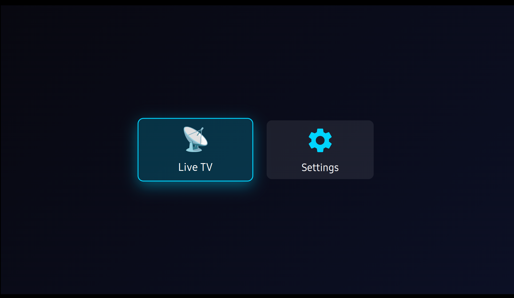
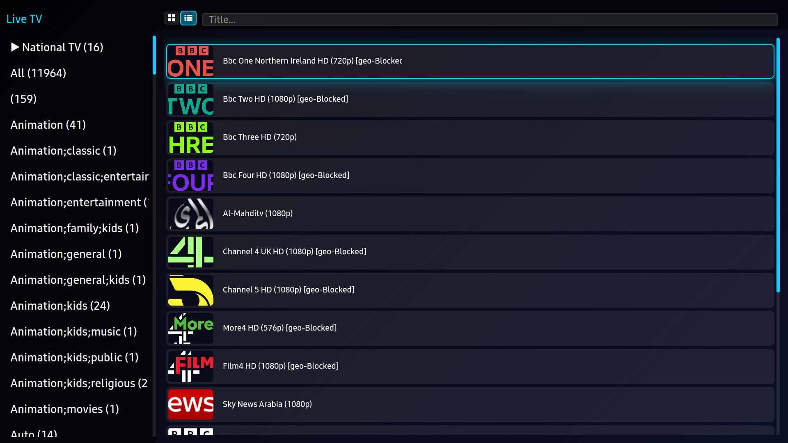
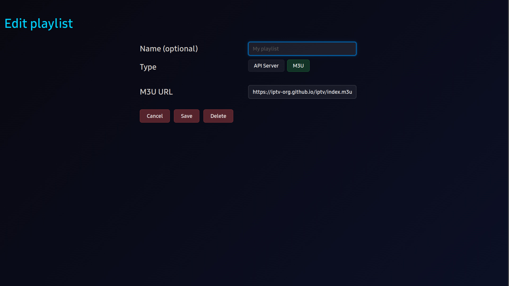
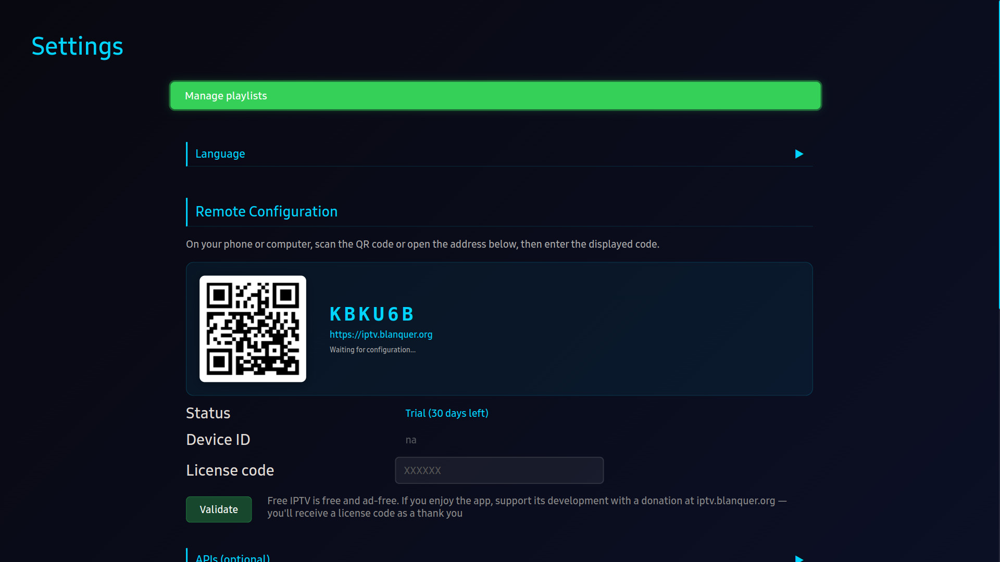
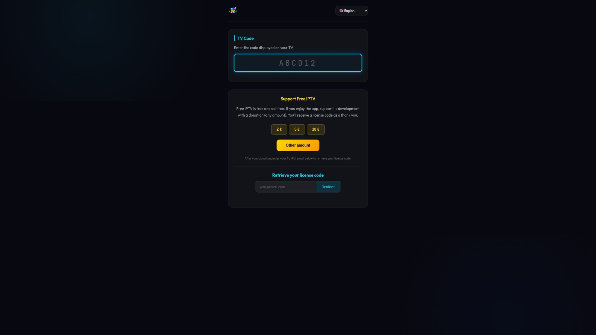

App Description Document
Eric Blanquer
| Version | Date | Description | Author |
|---|---|---|---|
| 1.0 | 2026-03-29 | Initial submission | Eric Blanquer |
| 1.1 | 2026-03-31 | Added app preview images and settings screenshot | Eric Blanquer |
Home Screen
├── Live TV → Browse (categories + channel list) → Player
├── Movies (VOD) → Browse (categories + movie grid) → Details → Player
├── Series → Browse (categories + series grid) → Details (seasons/episodes) → Player
├── Manga → Browse (filtered VOD + Series)
├── Sport → Browse (filtered VOD)
├── Entertainment → Browse (filtered VOD)
├── History → Browse (watch history) → Player
├── Downloads → Browse (offline content) → Player
└── Settings
├── Manage Playlists (add/edit/delete M3U or API Server)
├── Language
├── Remote Configuration (QR code)
├── Text Size (small/medium/large)
├── Text-to-Speech
├── Stream Proxy
├── APIs (TMDB, OpenSubtitles, SubDL)
└── Premium / Support
Grid of buttons to access available sections. Live TV and Settings are always visible.
Movies, Series, Sport, Manga, Entertainment and History sections appear only when an API Server playlist is configured.

Left panel with categories. Right panel showing channels. Navigate with Up/Down, select with Enter. Grid or list view toggle available (RED key).

Add, edit, delete M3U playlists or API server connections. Supports M3U URL and Xtream API server credentials.

Configuration options: playlist management, language selection, remote configuration via QR code, license status, API keys, text size, text-to-speech.

QR code displayed in Settings. User scans with phone/computer to configure playlists remotely — configuration is synced to the TV app via iptv.blanquer.org

| Screen | Function | Description |
|---|---|---|
| Home | Section Navigation | Grid of buttons to access available sections. Live TV and Settings always visible. Other sections (Movies, Series, Sport, etc.) appear with API Server playlists |
| Browse | Category Sidebar | Left panel with categories. Navigate with Up/Down, select with Enter |
| Browse | Content Grid | Right panel showing channels/movies/series. Grid or list view toggle available |
| Browse | Search | Press Enter on search bar to filter content by title |
| Details | Movie/Series Info | Shows poster, synopsis, cast, rating (from TMDB if API key configured) |
| Details | Season/Episode Nav | For series: navigate seasons and episodes |
| Player | Playback Controls | Play/Pause, Seek (Left/Right), Channel switch (Up/Down for live) |
| Player | Audio/Subtitle Tracks | Select audio language and subtitle track during playback |
| Settings | Playlist Management | Add, edit, delete M3U playlists or API server connections |
| Settings | Remote Configuration | QR code to configure playlists from phone/computer via iptv.blanquer.org |
| Settings | Language | Change app UI language (11 languages available) |
| Settings | Text Size | Adjust text size: Small, Medium, Large |
| Settings | TTS | Enable/disable Text-to-Speech voice guidance |
| Button | Action | Remarks |
|---|---|---|
| ENTER | Select / Play / Pause | |
| UP / DOWN | Navigate menus. In player: change channel (live) | |
| LEFT / RIGHT | Navigate menus. In player: seek backward/forward | |
| Ch. Up / Down | Page up/down in lists | |
| PLAY / PAUSE | Play or pause playback | |
| STOP | Stop playback and return to browse | |
| RED | Toggle grid/list view | |
| GREEN | Add/remove favorites | |
| YELLOW | Sort options | |
| BLUE | Filter options | |
| RETURN | Go back to previous screen | Samsung Mandatory |
| EXIT | Close the app | Samsung Mandatory |
| Item | Details |
|---|---|
| How to change languages |
Go to Settings → Language → Select desired language from the list. Supported languages: English, French, German, Spanish, Italian, Portuguese, Dutch, Polish, Russian, Arabic, Turkish. The app UI language changes immediately after selection. No restart required. |